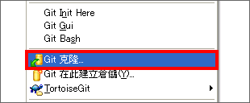
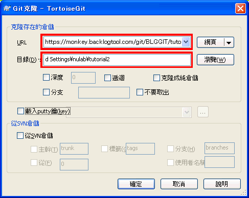
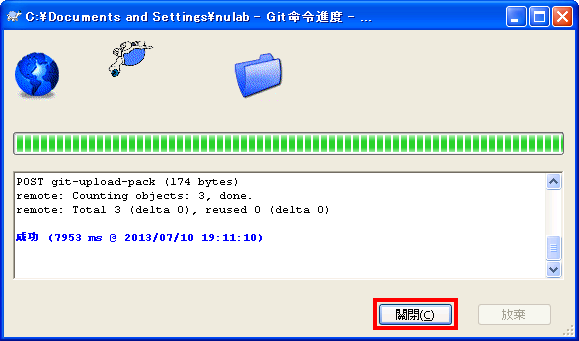
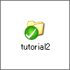
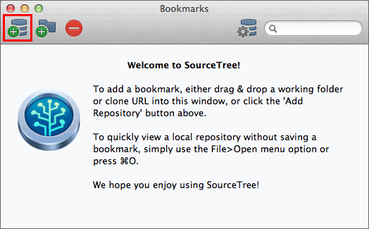
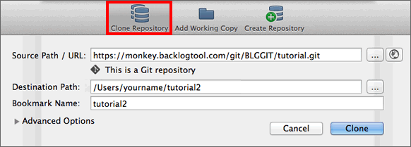
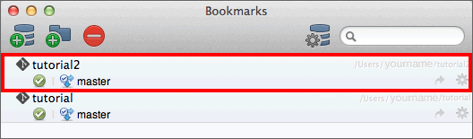

現在，請先假設自己是其他的用戶，將複製遠端數據庫，並在另一個目錄下複製「tutorial2」。
Windows
在桌面的任意的地方按右鍵，點一下選單的「Git克隆」。

輸入要複製的遠端數據庫的URL和本地端數據庫的目錄，點一下「確認」。
在這裡，我們會複製上一頁建立的遠端數據庫，並將其重新命名為「tutorial2」。

顯示以下畫面時便開始複製。當顯示作業成功，請點擊「關閉」結束畫面。

現在tutorial2目錄已建立完成。

想確認是否執行成功，請到剛複製的目錄「tutorial2」，查看sample.txt有沒有包含以下的內容：
連猴子都懂的Git命令
假設自己是其他的用戶來複製遠端數據庫，請在別的目錄下複製「tutorial2」。
Mac
點擊SourceTree收藏夾列表的左上角畫面的Add
Repository，或從選單欄選擇 檔案 > 新建

點一下「Clone
Repository」。輸入遠端數據庫的URL和要儲存的本地端數據庫的目錄，接著點一下「Clone」。
這樣子，就可以把上一頁建立的遠端數據庫命名為「tutorial2」進行複製。

複製的數據庫會增加到收藏夾列表。

若要確認是否作業成功，請到複製的「tutorial2」目錄裡，查看sample.txt有沒有包含以下內容：
連猴子都懂的Git命令
假設自己是其他的用戶來複製遠端數據庫，請在別的目錄下複製「tutorial2」。
主控台
使用clone命令來複製遠端數據庫，請參考以下的範例。<repository>指定遠端數據庫的URL，<directory>指定要複製的目錄名稱。
$ git clone <repository> <directory>
執行以下的指令，遠端數據庫將會被複製到tutorial2的目錄。
$ git clone https://nulab.backlog.jp/git/BLG/tutorial.git tutorial2
Cloning into 'tutorial2'...
Username: <用戶名>
Password: <密碼>
remote: Counting objects: 3, done.
remote: Total 3 (delta 0), reused 0 (delta 0)
Unpacking objects: 100% (3/3), done.
若要確認是否作業成功，請到複製的「tutorial2」目錄裡，查看sample.txt有沒有包含以下內容：
連猴子都懂的Git命令